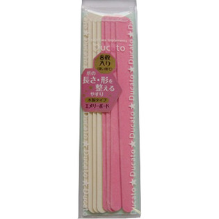

返回列表
产品名称：デュカート エメリーボード

シャンテイ デュカート エメリーボード ＿
メーカー シャンテイ
JANコード 4901604461135
商品の特徴
○使い捨て
○爪の長さ・形を整えるやすり
○木製タイプ
成分・分量
セラミック研磨剤、洋紙、ニカワ、樺材
用法及び用量
・ボードの粗い面(ピンク色)で爪の先端の形を整えます。その時爪に対して45度の角度にあて、サイドから中心に向かって一方向に削り、カーブ部分は爪の形に沿って整えます。
・削った爪をなめらかに仕上げるために、細かい面（白色）で軽くこすります。
※やすり表面の粒子が剥げて削れなくなったら、新しいやすりに交換してください。